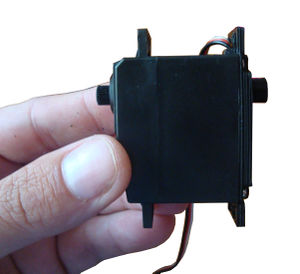
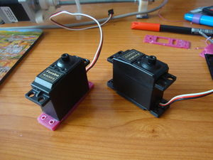
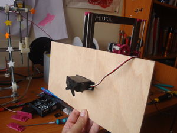
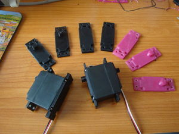
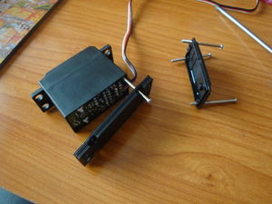
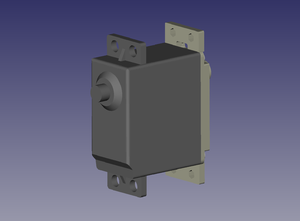
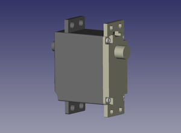
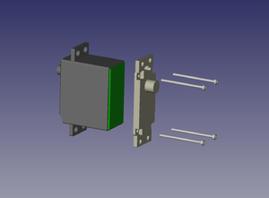

| Thingiverse | Github | Fabfabbers |
|---|


(click para ampliar)
Contenido
[ocultar]Introducción
Esta pieza es una mejora de esta tapa inferior para servos. Incluye las dos salientes con taladros, de manera que la parte inferior es similar a la superior, y el servo es simétrico. Esto tiene las siguientes ventajas:
- Más fácil de acoplarlo a los robots
- Los servos se pueden atornillar directamente a una base
- El falso eje permite hacer estructuras más robustas, o bien adaptar fácilmente rodamientos
Instrucciones
- Imprimir la tapa "clásica", la del falso eje (o una modificación propia)
- Quitar la tapa del servo
- Atornillar la nueva
- ¡Listo! :-)
Descarga
| Servo_lower_cover.zip | Fuentes de la tapa, para OpenScad |
| servo_lower_cover.stl | Tapa inferior, sin falso eje |
| servo_lower_cover_ears_shaft.stl | Tapa del servo con falso eje |
| servo_with_new_lower_cover.fcstd | Diseño 3D en Freecad: Servo con la tapa del falso eje |
| Freecad/exploded_view.fcstd | Diagrama de montaje (en Freecad) |
Fotos
| Álbum de fotos completo |
|---|
|  (click para ampliar) |
 (click para ampliar) |
|  (click para ampliar) |
 (click para ampliar) |
|  (click para ampliar) |
 (click para ampliar) |
|  (click para ampliar) |


Repositorio
Autores
Licencia
| |
Enlaces
Noticias
- 25/Mayo/2013: Publicados diagramas en Freecad
- 16/Mayo/2013: Primera versión de esta página